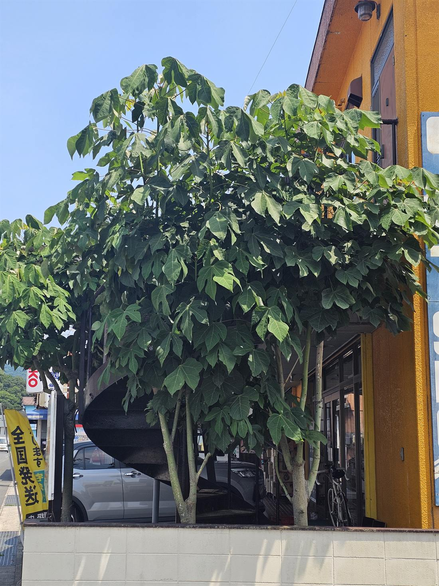
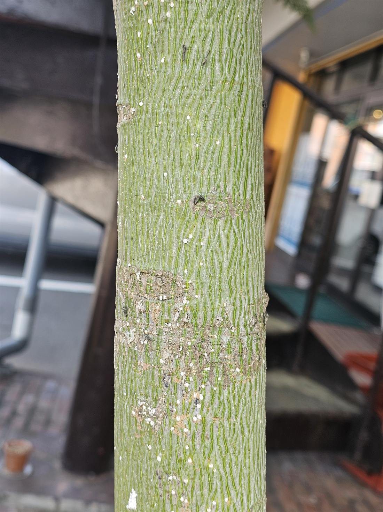
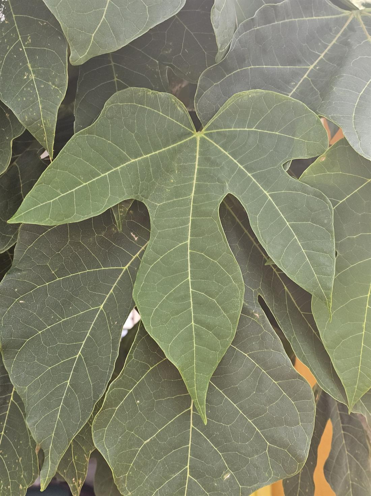

地図を読み込んでいるよ…
🔍 写真も地図も、押しているあいだ拡大して見られるよ（スマホは指を置いてすこし待ってね）。
🌍 の地図＝この子がもともと自生している場所を緑に。原産は中国南部と東南アジア。日本では沖縄と奄美大島に自然分布し、ごく古くに渡来して本州（東北南部以西）・四国・九州にも広く植えられている。この木は、お店の軒先の大きな鉢に植えられていた。
⭐原産は中国南部と東南アジア。日本では沖縄と奄美大島に自然分布する（地図の鹿児島は奄美のことで、県ぜんぶじゃないよ）。⚠本州・四国・九州は、古くに渡来して植えられたものだから塗っていない——この木も、お店の軒先の鉢植え。⚠中国は南部だけ・東南アジアも一部なのに、広く緑になっているよ。
⚠ 地図は国（日本と中国だけ県・省）までしか塗れないから、ほんとうの分布より広く見えていることがあるよ。地図はだいたいの場所。正確なところは、上の文を見てね。
アオギリ（青桐）
Firmiana simplex (L.) W.Wight
別名 · 梧桐（ごとう）／ 緑色の樹皮／ 掌状に3〜5裂の大きな葉／ ⚠名は「桐」でもキリ（キリ科）とは別物／ 原産 · 中国南部〜東南アジア（日本は沖縄・奄美に自然分布）
アオイ科 · Malvaceae（アオギリ属 Firmiana／旧アオギリ科 Sterculiaceae）
燻太さんの「緑色の樹皮はしぼり込みに使えるかも」「緑色の樹皮はしぼり込みに使えるかも。深めに切れ込みが入った葉っぱも特徴的。花や実は今はないみたい。」──緑の幹＋掌状の大きな葉で、一気に絞れた。名前「青桐」の由来そのもの。
⭐⭐⭐ 燻太さんの「緑色の樹皮は、しぼり込みに使えるかも」
- 燻太さんの言葉：「緑色の樹皮はしぼり込みに使えるかも。深めに切れ込みが入った葉っぱも特徴的。花や実は今はないみたい。」──その2つが、そのまま決め手だったよ。
- ⭐⭐緑色の、なめらかな樹皮（写真②）＝これがアオギリのいちばんの目印。幹まで緑なんだ。⭐燻太さんの言うとおり、これは強力なしぼり込み：緑の幹の木は多くないから、これだけでキリ（幹は灰褐色）を落とせる。
- ⭐大きな葉が、掌状に深く3〜5裂（ふつう5裂）・縁に鋸歯なし（写真③。長さ40〜50cmにもなる／Wikipedia）＝アオギリの葉。手のひらを大きく広げたような形。
- 花や実は今はない＝花期は5〜7月。もう終わりかけか、この木はいま咲いていないみたい。──でもアオギリの実は、すごく面白いんだ（下）。
⭐⭐⭐ 緑の樹皮 ── 名前「青桐」の由来そのもの
- ⭐アオギリ＝「青桐」。「青（緑）」＋「桐」。──幹の肌が青緑色で、大きな葉がつく様子が、キリ（桐）に似ていることから名づけられた（Wikipedia）。キリを「白桐」と呼ぶのに対して、こちらは「青（緑）の桐」。
- ⭐⭐⭐でも、アオギリとキリは、別の科の「他人の空似」。──アオギリ＝アオイ科／キリ＝キリ科。ぜんぜんちがう仲間なのに、幹の感じと大きな葉が似ているから、同じ「桐」の名がついた。⭐おまけ植物は、その「本物のキリ」。名前のもとになった木を、ならべて見てほしい。
- ⭐緑の樹皮のひみつ：樹皮が緑色なのは、クロロフィル（緑の色素）を持っているから。緑の幹は、葉だけでなく幹でも光を受けられると考えられている。⭐若い木ほど鮮やかな緑で、大きくなると灰褐色を帯びてくる（Wikipedia）＝この木は、まだ緑がきれいな若い木。
⭐⭐⭐ アオギリの実は「豆をのせた小舟」
- 花や実は今ないけれど、アオギリの実は、この木のいちばんの見どころだから書いておくね。
- ⭐⭐⭐秋、実が熟す前に、子房が5つに裂けて、それぞれが「舟の形」の葉っぱみたいな片になる（Wikipedia）。そして、その片のふちに、グリンピースくらいの丸い種を1〜5個のせる。──まるで、小さな緑の舟に、豆をならべて乗せたみたい。
- ⭐この「舟に豆をのせて風で飛ばす」形は、植物のなかでもとても珍しい。ふつうの実は種を中に包むのに、アオギリは種を“舟のふち”に外づけするんだ。──見た目も正体も、ちょっと変わり者。（031 フウセンカズラの「風船で飛ばす」と同じ、風で運ぶ工夫の仲間だね。）
同定について
- アオギリ（Firmiana simplex）で確定。⭐効いた問い＝「この特徴は、他の木を落とせるか？」
- ①⭐⭐緑色のなめらかな樹皮（写真②）＝緑の幹の木は少ないので、これでキリ（灰褐色）を落とせる。燻太さんの「しぼり込み」がそのまま効いた。
- ②⭐掌状に3〜5裂・縁に鋸歯なし・基部が心形・とても大きい（写真③）＝カジノキやクワ（葉に鋸歯・ざらつく）を落とせる／キリ（葉は裂けない大きなハート形）とも形がちがう。
- ③お店の軒先に、鉢植えで植えられている（写真①）＝街路樹・庭木によく使われる（耐火性があるから／Wikipedia）。
この植物のこと
- アオイ科アオギリ属の落葉高木（大きくなると15〜20m）。⭐アオイ科は、この図鑑で4人目：003 スイレンボク・039 スイフヨウ・067 カカオにつづく。──チョコレートの木（カカオ）と、緑の幹の並木（アオギリ）が、同じ科の親戚。
- 花期は5〜7月、黄白色の雄花と赤い雌花が混じって、小さな5弁の花を群れて咲かせる（Wikipedia）。
- ⭐利用：材は軽くやわらかく、琴や下駄に。⭐種子は炒って食べられ、太平洋戦争中にはコーヒーの代用品にもされた（Wikipedia）。──豆をのせた小舟の、その豆が、コーヒーがわりになった。
- ⭐街路樹・公園樹によく植えられるのは、火に強い（耐火性）から（Wikipedia）。この木も、お店の軒先の鉢で、日よけの木として大事にされているみたい。
参考：Wikipedia「アオギリ」（Firmiana simplex・アオイ科アオギリ属（旧アオギリ科）・アオイ目・原産は中国南部と東南アジア／日本では沖縄・奄美大島に自然分布、古く渡来し本州（東北南部以西）・四国・九州に植栽・幹や枝の樹皮は緑色、生長で灰褐色に・葉は掌状に浅く3〜5裂（ふつう5裂）・長さ40〜50cm・基部は心形・鋸歯なし・花期5〜7月・黄白色の雄花と赤色の雌花・蒴果は熟す前に子房が5片に裂開して舟形になり、縁にグリンピース大の種子を1〜5個つける・名は幹肌が青緑でキリに似ることから／キリ科とは別物・材は琴や下駄／種子は食用・戦中はコーヒー代用／耐火性で街路樹に）